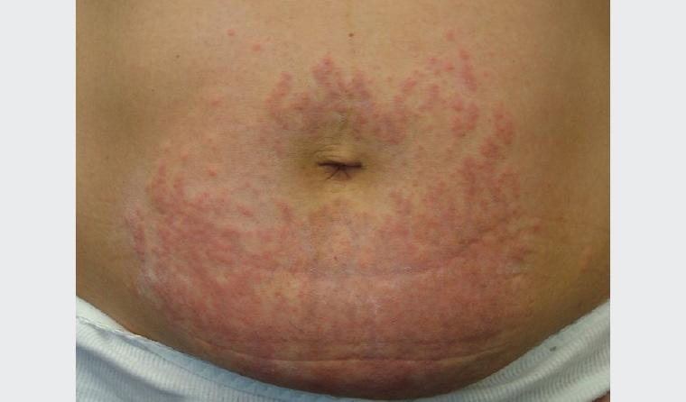
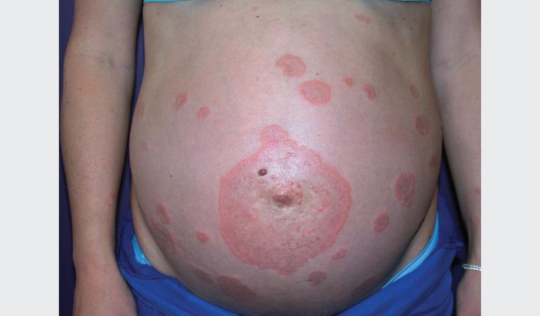
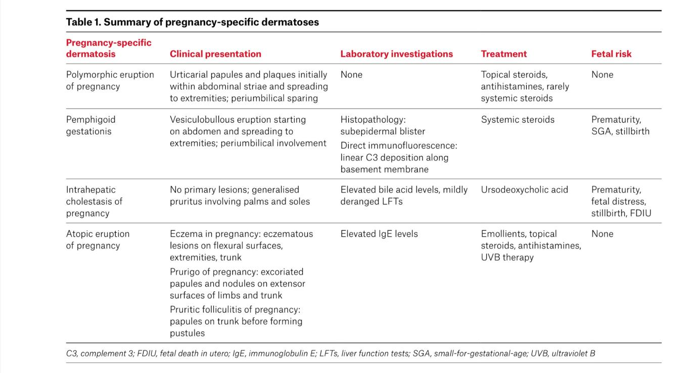
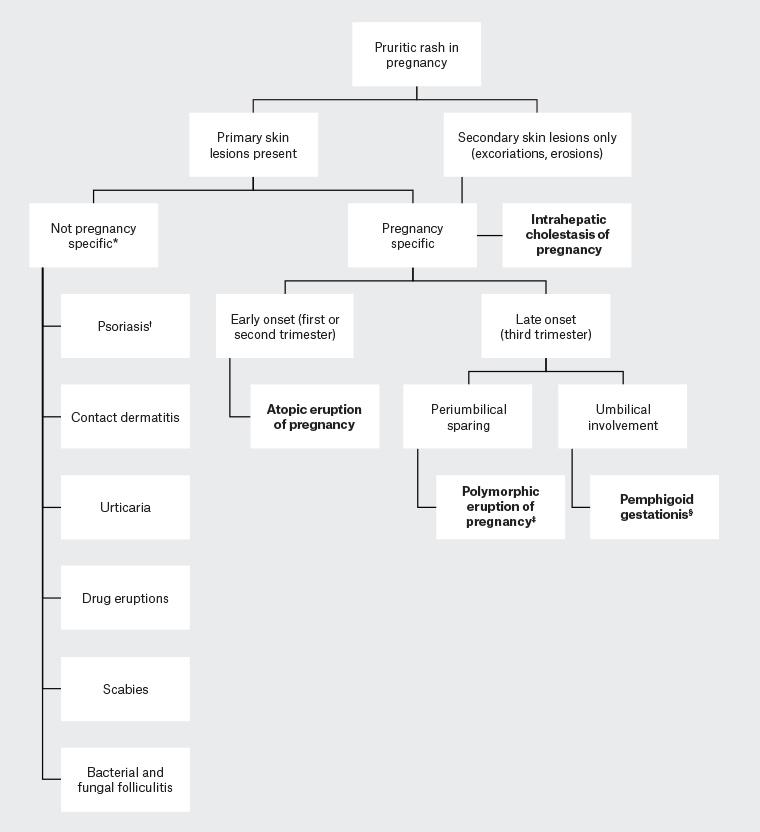
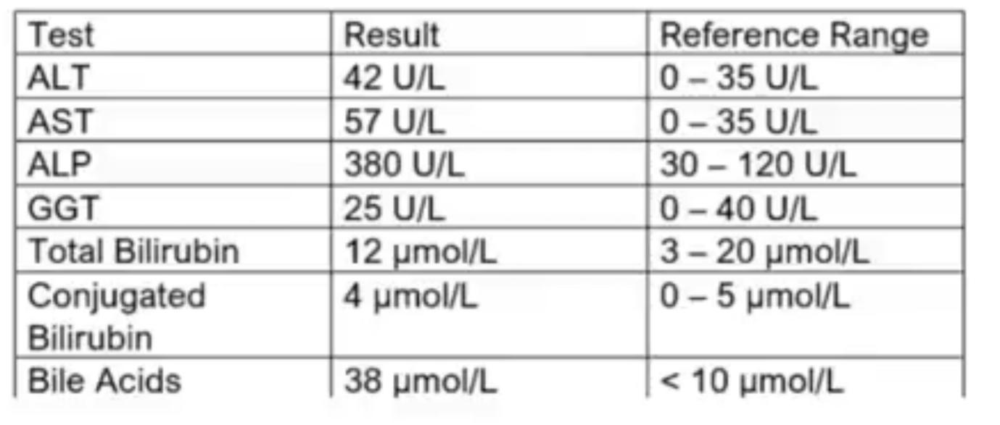

ITCHINESS IN PREGNANCY
Old Version
Your next patient is a 36 week pregnant lady who has been referred by the midwife. She is complaining of itchiness. This is her first pregnancy and she has been diagnosed with GDM and is on insulin. She has a previous history of Eczema.
Task:
Take history for 6 minutes
Explain your diagnosis and differentials to the patient

Figure. Polymorphic eruption of pregnancy: pruritic papules on the abdominal area coalescing to form plaques, with periumbilical sparing
New 2025 Version
Your next patient is a 36 week pregnant lady brought by the midwife for a review of a recent ichiness and tiredness. Antenatal visits have been normal so far.
On examination: She has pale striae on the abdomen
SFH 35 cm, Longitudinal, 4/5 engagement, FHR normal
Task:
- Take history for 6 minutes
- You will be given investigation results
- Explain your diagnosis with reasons
Starting the Discussion
- Pregnant lady in third trimester with itchiness.
- Brainstorm differentials.
- Focus first on itchiness (before worrying about tiredness).
Differential Framework
1. Pregnancy-specific differentials
2. Non-pregnancy differentials
Non-Pregnancy Differentials
- Any liver disease → itchiness.
- Eczema (allergic dermatitis).
- Contact dermatitis.
- Urticaria.
- Infections:
- Mildly itchy: tinea.
- Severely itchy: scabies.
- Mildly itchy: tinea.
Pregnancy-Specific Serious Problems / Rashes
- Intrahepatic cholestasis of pregnancy
- Liver disease.
- “Smaller brother” of:
- Preeclampsia.
- Acute fatty liver disease.
- Preeclampsia.
- Preeclampsia can occasionally cause itchiness → still in the list.
- Liver disease.
- Polymorphic eruption of pregnancy
- Also called:
- Pruritic urticarial papules and plaques of pregnancy.
- P-U-P-P.
- Pruritic urticarial papules and plaques of pregnancy.
- Elevated rashes: urticarial papules and plaques.
- Famous characteristics:
- Starts around abdominal striae/stretch marks.
- Peri-umbilical sparing (does not involve around umbilicus).
- Starts around abdominal striae/stretch marks.
- Differentiates it from pemphigoid.
- Also called:
- Pemphigoid gestationis
- Vesicular lesions and bullae.
- Very specific: happens around umbilicus.
- Vesicular lesions and bullae.

Figure. Pemphigoid gestationis: plaques and vesicles that begin on the abdominal wall before spreading, with periumbilical involvement
- Cholestasis of pregnancy
- Should not give rashes.
- If itchiness with no skin findings → think beyond skin.
- All skin conditions (eczema, contact dermatitis, urticaria, polymorphic eruption, pemphigoid) have rashes.
- Cholestasis has none.
- Should not give rashes.
- Atopic eruption of pregnancy
- A version of eczema in pregnancy.
- A version of eczema in pregnancy.


Your next patient is a 36 week pregnant lady brought by the midwife for a review of a recent itchiness and tiredness, Antenatal visits have been normal so far.
On examination: She has pale striae on the abdomen
SFH 35 cm, Longitudinal, 4/5 engagement, FHR normal
Task:
• Take history for 6 minutes
• You will be given investigation results
• Explain your diagnosis with reasons
APPROACH TO THE CASE
- Two complaints → think about differentials
- Consider the purpose of the case
- Conclude: Main complaint = itchiness
- Tiredness = side complaint
HISTORY TAKING
1. Open-Ended Start
- Sit down, introduce yourself.
- “How can I help you?”
- Patient reports intense itchiness.
- Acknowledge concern briefly and move on.
EXPLORING THE MAIN COMPLAINT: ITCHINESS
BOX 1: TIMING
- When did it start?
- On and off or constant?
- Is it getting worse?
- First time or previous history? (urticaria, eczema)
BOX 2: PATTERN
- Site: “Where do you feel itchy?”
- e.g., belly button/stretch marks/palms/soles
- e.g., belly button/stretch marks/palms/soles
- Night: “Does it wake you up at night?” (red flag)
ALLEVATING / AGGRAVATING FACTORS
- Anything making it better or worse?
- Specifically:
- Worse at night (reminder)
- Worse with warm shower/warm water
- Relevant to scabies in 2025
- Relevant to scabies in 2025
- Worse at night (reminder)
ASSOCIATED FEATURES
- Rashes: ask early
- Any rashes?
- Any redness?
- Any blisters?
- Any rashes?
- Secondary bacterial infection
- Any fever?
- Any discharge on the skin?
- Any fever?
DIFFERENTIALS (PREGNANCY PRIORITY)
1. PREECLAMPSIA
- Headache?
- Blurring of vision?
- Dizziness?
- Leg swelling?
- Chest pain or shortness of breath?
- Decreased urine output?
(Abdominal pain not asked here)
2. CHOLESTASIS
- Abdominal pain?
- Nausea and vomiting?
- Appetite loss?
- Tiredness
- Pick ONE question only
- Are you sleepy or low in energy?
- Yellowish discoloration of skin?
- Dark urine and pale stools?
- Past history of liver problems or gallstones?
- Optional: family history of liver problems or gallstones?
- Alcohol: “Just want to confirm you’re not drinking alcohol”?
OB HISTORY
- Regular bloods at beginning of pregnancy?
- Dating scan?
- Down syndrome check?
- 18–20 week ultrasound?
- Sweet drink test?
- Swab test?
- Is your baby kicking as usual?
- Previous pregnancy:
- Any previous pregnancies?
- Any complications in pregnancy or delivery?
NON-PREGNANCY DIFFERENTIALS
INFECTIONS (imp)
- Scabies
- Travel?
- (Between fingers relevant if palms/soles mentioned)
- Tinea (any pets?)
CONTACT DERMATITIS (imp)
- Any new cream, body wash, soap, anything new?
URTICARIA
- Any new medicine?
- Any new food?
- Wheezing?
ALLERGIC DERMATITIS (imp)
- Past/family history of eczema, asthma, hay fever
PSORIASIS / SKIN CONDITIONS
- Family or personal history of psoriasis or any skin condition
DIFFERENTIAL GROUPS review
Pregnancy-Specific
- Preeclampsia
- Intrahepatic cholestasis / cholestasis of pregnancy
- Polymorphic eruptions of pregnancy
- Pemphigoid
- Atopic eruption of pregnancy
Non-Pregnancy
- Allergic dermatitis
- Contact dermatitis
- Autoimmune dermatitis (psoriasis)
- Urticaria
- Infections:
- Scabies (top of list)
- Tinea corporis
OLD VERSION CASE (INITIAL VERSION)
- Itchiness
- History of eczema
- Diagnosis ended up being polymorphic eruption of pregnancy
- Associated to GDM
- Photo shows:

- Rash on stretch marks on stomach
- Spares belly button
- Rash on stretch marks on stomach
- No fever
- No tiredness
- No features of preeclampsia or cholestasis
- Patient Explanation:
“This is a skin condition in pregnancy which causes itchiness on stretch marks that does not happen around the belly button”
2025 VERSION (NEW VERSION)
- Itchy and tired
- Second pregnancy
- First pregnancy fine
- Antenatal checks done
- Itchy on palms and soles
- No rash
- No travel
- No preeclampsia features
Investigations

- ALT/AST mildly increased
- GGT normal
- ALP mildly increased
- Bilirubin normal (or mildly elevated—no difference)
- Bile acids high
- Pattern discussed:
- Hepatocellular vs cholestasis pattern
- Hepatocellular 10x AST and ALT increase
Cholestasis +/- AST/ALT increase, bilirubin/ ALP increase - Main thing to look for: bile acids
DIAGNOSIS
- Cholestasis / intrahepatic cholestasis of pregnancy
- Lay explanation:
- This is liver problem in pregnancy. Liver does not release bile properly
- Causes itchiness, abdominal pain, nausea, and other positives
- This is liver problem in pregnancy. Liver does not release bile properly
MANAGEMENT
Polymorphic Eruption of Pregnancy
- Topical corticosteroid creams
- Antihistamines to control itchiness
Cholestasis
- 36 weeks pregnant → plan for delivery
- Consider birth (36–37 weeks depending on results)
- Medication possible, but start planning for birth
- Similar logic to preeclampsia (stop pregnancy)